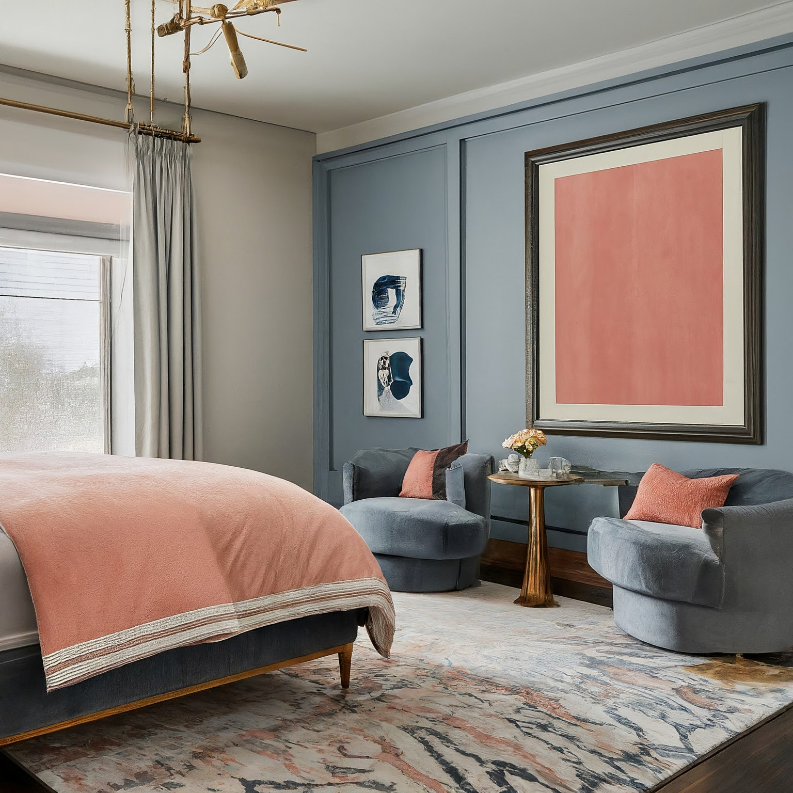

Bedroom Design Concept: Traditional Meets Contemporary

Bedroom Design Concept: Traditional Meets Contemporary
Overall Concept and Style:
This bedroom design seeks to blend the warmth and comfort of traditional design with the clean lines and functionality of contemporary aesthetics. The goal is to create a serene and sophisticated space that feels both inviting and stylish. We'll achieve this by incorporating traditional elements like a fireplace and luxurious fabrics, while using a modern layout and contemporary furniture pieces. The color scheme will act as the bridge, with the grounded slate blue and bronze juxtaposed with the playful coral pink.
Color Scheme and Materials:
- Dominant Color: Slate Blue (walls, potential feature wall with subtle texture like Venetian plaster) - Provides a grounding, calming base.
- Accent Color: Coral Pinks (varying shades, from dusty rose to brighter coral) - Used for soft furnishings, artwork, and accent pieces to inject personality and energy.
- Metallic Accent: Bronze (lighting fixtures, hardware, decorative objects, fireplace surround) - Adds a touch of warmth, luxury, and visual interest.
- Neutral Base: Soft Grey (upholstered bed, rug) - Provides a sophisticated backdrop and prevents the space from feeling overwhelming.
- Materials Palette:
- Walls: Slate blue paint (matte or eggshell finish), potential feature wall with Venetian plaster or textured wallpaper in a slightly lighter slate blue.
- Flooring: Light to medium-toned hardwood (oak, maple) with a satin finish or a large area rug.
- Upholstery: Grey linen or velvet for the bed frame, coral pink cushions in various textures (velvet, linen, silk).
- Furniture: Mix of wood (dark stained or natural), bronze metal, and potentially marble (nightstands).
- Fireplace Surround: Bronze, slate, or a combination of both.
- Window Treatments: Sheer or semi-sheer linen curtains in off-white or light grey with coral pink or bronze accents (trim, tiebacks).
Furniture and Layout:
- Bed: King or Queen-sized bed with a grey upholstered headboard (tufted or channel-back for traditional flair) and a low-profile, contemporary frame. Positioned as the focal point of the room, ideally facing the door or a window with a view.
- Nightstands: Matching nightstands on either side of the bed. Consider options with drawers and shelves for storage. Materials: Wood with bronze hardware, or marble tops with bronze legs. Choose a contemporary, clean-lined style.
- Fireplace: A focal point on one wall (opposite the bed or on a side wall). Mantel can be traditional (wood with decorative molding) or contemporary (sleek and minimalist). Incorporate a bronze fire screen or decorative elements on the mantel.
- Seating Area: Create a small seating area near the fireplace with two comfortable armchairs upholstered in a coral pink fabric. A small round coffee table with a bronze base could sit between the chairs.
- Dresser: A long, low dresser against one wall, offering ample storage space. Consider a wood dresser with bronze hardware. Keep the top clear or style it with decorative objects.
- Bench (optional): At the foot of the bed, add an upholstered bench in a coordinating fabric (grey or a subtle pattern incorporating the color scheme).
- Layout: The layout should prioritize flow and functionality. Ensure enough space to move comfortably around the bed and between furniture pieces. Arrange furniture to create a balanced and symmetrical composition.
Lighting Design:
- Ambient Lighting: Recessed lighting in the ceiling provides overall illumination. Consider a dimmer switch to control the brightness. A statement chandelier or pendant light above the bed adds visual interest and reinforces the traditional/contemporary blend.
- Task Lighting: Bedside lamps on each nightstand for reading. Opt for lamps with bronze bases and linen shades. A floor lamp near the seating area can provide additional task lighting.
- Accent Lighting: Wall sconces flanking the fireplace or artwork to highlight specific features. Consider spotlights to illuminate the artwork.
- Fireplace Lighting: The fireplace itself will provide warm, ambient light. Add candles or LED candles on the mantel for extra ambiance.
Decorative Elements:
- Artwork: Choose artwork that incorporates the color scheme and reflects your personal style. Large abstract canvases or framed prints with landscape scenes work well.
- Rugs: A large area rug under the bed helps to define the space and add warmth. Consider a neutral-colored rug with a subtle pattern or texture. A smaller accent rug in front of the fireplace can add visual interest.
- Cushions and Throws: Layer different textures and patterns of cushions and throws on the bed and armchairs. Mix coral pinks, slate blues, and neutrals.
- Mirrors: A large mirror on one wall can help to reflect light and make the room feel larger. Consider a decorative mirror with a bronze frame.
- Accessories: Decorative objects such as vases, sculptures, and candles can add personality and interest to the space. Choose objects that incorporate the color scheme and materials palette. Bronze candle holders, coral-colored vases, and books with blue spines can all contribute to the overall aesthetic.
- Plants: Incorporate indoor plants to add life and freshness to the room. Potted plants on the nightstands, dresser, or near the fireplace can create a calming and inviting atmosphere.
Practical Considerations:
- Storage: Ensure adequate storage space for clothing, linens, and personal belongings. Consider built-in closets or drawers in the bed frame.
- Window Treatments: Choose window treatments that provide privacy and light control. Blackout curtains can be used in addition to sheer curtains for optimal functionality.
- Electrical Outlets: Ensure there are enough electrical outlets in convenient locations for lamps, electronic devices, and other appliances.
- Soundproofing: If noise is a concern, consider adding soundproofing materials to the walls and ceiling. Thick rugs and upholstered furniture can also help to absorb sound.
- Budget: Establish a realistic budget for the project and prioritize your spending. Consider purchasing furniture and accessories from a variety of sources, including online retailers, antique stores, and consignment shops.
- Sustainability: Choose eco-friendly materials and practices whenever possible. Consider using recycled or reclaimed materials, energy-efficient lighting, and low-VOC paints.
This comprehensive design plan provides a framework for creating a beautiful and functional bedroom that reflects your personal style and preferences. Remember to tailor the details to your specific needs and budget. Good luck!